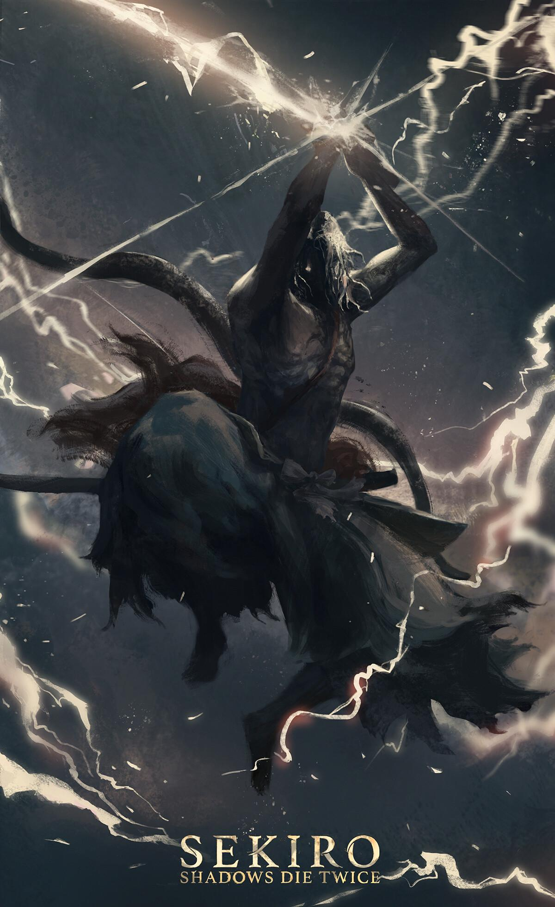

Setting & Story
Set against the backdrop of Japan’s Sengoku period, Ashina is a land perched on the precipice of ruin. Desperate to preserve his clan’s sovereignty against an invading ministry, Lord Genichiro turns to forbidden, immortal power—the Dragon’s Heritage possessed by the young Lord Kuro. You play as the Wolf, a disgraced shinobi who wakes from defeat missing an arm, bound by a absolute oath to protect his master. Navigating snowy mountain fortresses, bamboo-lined valleys, and blood-soaked battlefields, Sekiro’s story explores the tragic cost of desperation, the corrupting nature of immortality, and the weight of unwavering loyalty in a world consumed by war.


Unlike traditional tales of heroic triumph, the narrative moves with the swift, lethal precision of a deflected blade. Every encounter demands mastery over posture, balance, and relentless aggression as you cut through elite samurai, shadowy assassins, and monstrous manifestations of the Heretical Waters. As Wolf uncovers the truth behind Kuro’s bloodline, he must choose whether to follow the strict Iron Code of his adoptive father or forge his own path to sever the chains of immortality once and for all—even if it means burning Ashina to the ground.